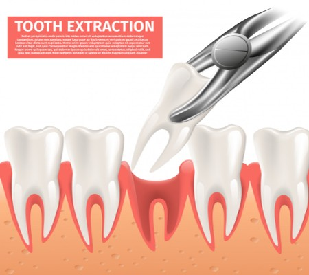
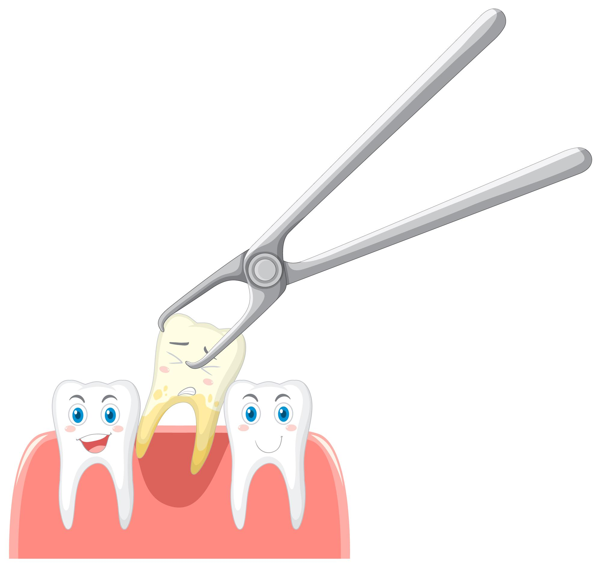

English
English
Diş Çekimi - İstanbul
Atlantic Diş Kliniği - İstanbul
Diş çekimi nedir? Acıtır mı? 20 lik diş ağrısı ve 20lik diş çekimi zor mudur?
Hastaların diş çekim koltuğuna oturma korkusu nedeniyle diş çekimleri çok gerekli olsa bile ötelenebilmektedir. Ertelenen diş çekimi hem ağız sağlığımız hem de yaşamsal öneme sahip kalp, karaciğer gibi organlarımızın sağlığı açısından da risk oluşturmaktadır. Uzman diş hekimi elinde uygun anestezi altında her türlü diş çekimi kolaylıkla yapılmaktadır. Dişlerin çekilme sebepleri farklı farklıdır. Ama en önemli sebep ağrıya dayanamayan hastaların ısrarlı taleplerdir. Diş tedavisinde çekim son tercih olmalıdır. Diş çekimine karar verip işlemi gerçekleştirmek gerçek uzman diş hekimlerine çok zor gelir. Çünkü asıl amaç dişin kurtarılması olmalıdır. Sonuçta diş çekimine karar verilirse dikkat edilmesi gereken birçok husus mevcuttur.
Diş çekimi nedir?
Diş çekimi, özellikle 20 lik diş olmak üzere, önemli bir hasara uğramış, çürümüş, enfeksiyon kapmış veya çapraşık olan dişlerin yuvalarından çıkarılma işlemidir. Diş çekimi yaygın bir prosedür olarak sorunlu dişteki bakterileri ortadan kaldırabilir ve genel ağız sağlığınızı tedavi edebilir. Diş çekimi bir diş hekimi veya ağız cerrahı tarafından lokal, genel, intravenöz anestezi veya bunların bir kombinasyonu ile yapılır.
Diş neden çekilir? Diş çekimi hangi durumlarda uygulanır? Diş çekimi ne zaman önerilir?
Diş hekimleri mümkün olduğu müddetçe dişleri çekmekten ziyade diğer tedavi teknikleri yeterli geliyorsa ağızda tutmayı tercih eder. Diş artık onarılmayacak seviyeye geldiyse diş çekimi kaçınılmaz olabilir. Diş hekimleri aşağıda sayılı bazı durumlarda diş çekimini önerebilir:
- Dişteki çürük çok ağırsa.
- Dişte meydana gelen çürük veya kırık, dolgu, kanal tedavisi ve benzer diğer tedavi yöntemleri ile tedavi edilemiyorsa.
- Çapraşık veya fazla sayıda dişler var ve bunlar diğer dişlerin çıkmasını engelliyorsa.
- Ağızda kırık diş
- Gömülü diş varsa.
- Gömülü 20 lik diş ağrı yapıyor aynı zamanda yandaki dişlere zarar veriyorsa.
- Şiddetli diş eti hastalığı nedeniyle çene kemiği zarar görüyor ve dokularda kayıp oluyorsa.
- Kemoterapi tedavisi gören, organ nakli olan hastalarda rahatsız olan dişte oluşan enfeksiyon risk oluşturuyorsa.
- Dişteki görünüş bozukluğu estetik açıdan sorun teşkil etmişse.
- Dişler sallanma nedeniyle işlevini gerçekleştiremez hale gelmişse.
- Diş normal ekseninden kaymışsa (luksasyon)veya diğer diş yaralanmaları olmuşsa.
- Diş kökünde ur veya yok edilemeyen kistler varsa.
Sayılan durumlar oluşmuşsa son çare olarak diş çekimi yapılabilir.
Hasta için diş çekimi hususunda en doğru kararı diş hekimi verecektir.
Diş çekimi öncesi neler yapılalıdır?
- 20 lik diş çekimi dahil her türlü diş çekiminde yapılacakları planlamadan önce değerlendirme için öncelikle dişin röntgeni çekilecektir.
- Diş çekimi öncesinde ağız ve diş temizliği yapılmalıdır.
- Diş hekiminize kullanılan ilaçlar, vitaminler, takviyeler ve reçetesiz satılan ilaçlar konusunda bilgi verilmelidir. Yakın zamanda farklı bir hastalık için bifosfonat isimli intravenöz ilaç tedavisi alınacaksa bu husus mutlaka diş hekimi ile paylaşılmalı ve diş çekimi ilaç tedavisinden önce yapılmalıdır. Tersi bir durumda çenede kemik ölümü olabilir.
- Diş hekiminize doğuştan kalp hastalığı, şeker hastalığı, karaciğer hastalığı, tiroid hastalığı, böbrek hastalığı, yüksek tansiyon, yapay eklem, kalp kapakçık rahatsızlıkları, belirli hormonların yetersizliği nedeniyle oluşan adrenal hastalık, bağışıklık sistemi problemi, kalbin iç zarında var olan bakteriyel hastalık varsa bildirilmelidir.
- Diş hekimi ameliyat uzun sürecekse, enfeksiyon varsa, bağışıklık sistemi zayıfsa, belirli bir tıbbi durum biliniyorsa diş çekimi öncesinde antibiyotik tedavisi uygulayabilir.
- Diş çekim işleminin başarılı bir şekilde gerçekleşmesini istiyorsanız, intravenöz (IV) anestezi alacaksanız bol ve kısa kollu giyecekler giymek, 6-8 saat önceden bir şey yiyip içmemek, sigara kullanmamak, soğuk algınlığı mevcutsa diş hekimine söyleyerek randevu gününü ertelemek, önceki gün farklı bir anestezi uygulanmasını gerektirecek mide bulantısı veya kusma varsa diş hekimine bildirmek, genel anestezi uygulanacaksa yanınızda refakatçi bulundurmak, dikkat edilmesi gereken durumlardır.
İstanbul diş çekimi nasıl yapılır? Diş nasıl çekiliyor?
Dişinizin dış bölgede görünüyor olmasına veya gomulu dis olmasına bağlı olarak diş çekimi iki farklı şekilde yapılır.
Basit çıkarma
Diş çekimi yapılacak alan lokal anestezi ile uyuşturulur, böylece çekim sırasında ağrı hissedilmez. Yanlızca baskı hissedilir.Diş hekimi daha sonra dişi gevşetmek için elevatör adı verilen bir alet ile sağa sola hareket ettirir ve dişi çıkarmak için forseps kullanır.
Cerrahi çekim
Gömülü 20lik diş çekimi ve benzeri ağır vakalarda hastaya hem lokal anestezi hem de intravenöz anestezi verilir. Diş hekimi tıbbi bir durum görürse genel anestezi de uygulayabilir. Genel diş hekimi veya ağız cerrahı diş etini küçük bir kesi şeklinde keser. Diş eti altındaki operasyon yapılacak dişin görülmesi için geniş bir alan sağlandıktan sonra çekim işlemi yapılabilir. Çekim işleminden önce gerekli görülürse dişin çevresindeki kemik çıkarılabilir. Diş etine dikiş atılır. 20 lik diş çekimi de olsa gömülü diş veya görünen diş çekimi de olsa diş çekim işleminin zor olup olmayacağı köklerin durumu ile dişle kemik arasındaki bağlantıya bağlıdır. Yerinden oynamış, sallanan dişler kolay bir şekilde çekilirken diş kök yapısının düzenli olmaması, gömülü diş olması, ağır çürük vakası durumunda diş çekimi zor olup tek parça halinde yerinden çıkmayan diş parçalı halde çıkarılır.
Diş çekimi sonrası neler yapılmalıdır?
- Diş çekimi sonrası diş hekimi operasyon yapılan bölgeye pamuk veya gazlı bez yerleştirir. Kanamayı durduracak ve sağlıklı bir iyileştirme için kan pıhtısının oluşmasına katkı sağlayacak olan tamponun hasta tarafından 20-25 dakika kadar ısırılması gerekir. Tampon sık değiştirilmeden ağızda tutulmalıdır. Kan pıhtısı, diş çekimi yapılan yerdeki oluşan boşluğa doğal bir tampon yaparak ileride dolacak olan kemik yapıya hazırlık olacaktır. Kan pıhtısı dikkat edilmezse oluşamaz ve böylece yara geç iyileştiği gibi ağrılı bir iyileşme dönemi geçirilir.
- Diş çekimi sonrası ağrı hissediliyorsa diş hekimi tarafından önerilen ağrı kesici alınabilir. Fakat aspirin kanı sulandırma etkisi olduğu için kullanılmamalıdır. Çünkü kan sulanırsa pıhtılaşma olmaz. Diş çekimi öncesinde anestezi vermek için kullanılan iğnelerin yerlerinde ağrı ve acı oluşabilir. Bu ağrı ve acılar ortalama 2 günde geçecektir.
- Diş çekildikten sonra 24 saate kadara sürebilecek sızıntıya benzeyen hafif kanamalar normaldir. Bu durumda panik yapıldığı takdirde iş daha da zorlaşacaktır. Kanama yoğunsa temiz, steril bir pamukla tampon yapılabilir. Tampon 30 dakika kadar bölgede kalmalıdır. Kanama bu şekilde de durdurulamamışsa hemen diş hekimine başvurulmalıdır. Kanama sürekli hal almışsa tampon süresi uzatılmalı, sık sık değiştirilmemelidir. Bu süreçte ağzı çalkalamak kanamayı artırır.
- Diş çekimi sonrası en az 72 saat sigara ve alkol kullanılmamalıdır. Sigara ve alkol kan pıhtısının oluşmasına engel olur.
- Diş çekiminden sonra aşırı sıcak ve soğuk yiyecek ve içecekler tüketilmemelidir. Bu durum kanamayı tekrar başlatabilir. Ilık ve yumuşak şeylerin tüketilmesi önerilir.
- Diş çekimi uzun sürmüş ve zorlu olmuşsa şişlik ve morarmayı kontrol altına almak adına 8 saat boyunca saat başı olmak üzere 5-10 dakika aralıklarla soğuk uygulamak iyi olacaktır.
Diş çekimi acıtır mı?Diş çekimi ağrılı bir işlem mi?
Birçok hasta diş çekimi sırasında ağrı hissedeceğini düşünür. Fakat hastaya işlem esnasında lokal anestezi verildiğinden ağrı ve acı yoktur. Diş hekimi, diş çekimi işlemine başlamadan bölgenin uyuşup uyuşmadığını kontrol eder ve ona göre diş çekimi işlemine başlar. Bazı hastalarda diş çekimi sonrası ağrı eşiğine bağlı olarak 2-3 gün süren hafif ağrı ve sızılar ortaya çıkabilir. Hatta diş iltihaplı ise ya da diş çekim işleminin zorlu olduğu durumlarda çekimden sonra ağrı uzun süre devam edebilir.Bu durumlarda diş hekimi tavsiyeli ağrı kesiciler kullanılabilir.
Diş çekimi hakkında sık sorulan sorular
Diş çekim işlemi sonrası çekim olan yerde kan pıhtısı oluşması gerekir. Pıhtı oluşmamış ise iltihap görülür ve ağrı oluşur buna alveolit denir. Alveolit diş çekim operasyonundan sonra en sık görülen temel komplikasyonlardan biridir. Alveolit; meydana geldiği yere göre değişen, alın ve göz çevresine kadar yayılan ağrı, halsizlik, yorgunluk ve rahatsızlığa neden olan, cerrahi uygulamadan yaklaşık 1-3 gün sonra meydana gelen, pıhtı oluşum şeklinin kısmen veya tamamen bozuk olduğu ve istenmeyen ağız kokusu ile beraber kendini gösteren bir sorundur. Alveolit ağrısı genellikle analjezik ilaçlar ile geçmeyen bir ağrı olup, ortalama 7-10 gün devam edebilir. Ağız ve diş bakımının kötü yapılması, ağız bakterileri, ileri derecede diş eti problemleri, travmatik diş çekim işlemi, çekim bölgesinde kalmış olan kök ve kemik parçaları, pıhtı oluşumun zarar görmesi, gebelik kontrolü ilaçları, sigara ve alkol tüketimi alveolit gelişimine sebep olabilir.
Diş çekim işlemi yaptıracak kişiler işlem öncesi endişeli olduklarından diş çekimi kaç dakika sürer ya da diş çekildikten sonra ne kadar sürede iyileşir şeklindeki soruların cevaplarını merak ederler. Diş çekim süresi dişin kemikle bağlantısı, çekim yapılacak dişteki kök adedi ve köklerde yön değişikliği olup olmadığı, dişin diğer dişlerle olan konumu, dişte kırık varsa boyutu gibi etkenlere bağlı olarak değişir. Komplikasyon gelişmiş vakalarda işlem uzayabilir. Diş çekimi için açıkladığımız nedenlerle net bir süre söylenemese de genel olarak sorunsuz bir diş 15-20 dakikada çekilebilir.
Sigara ve alkol kullanımı sağlıklı bir iyileştirme için gerekli olan kan pıhtısının oluşmasını engeller. Aynı zamanda sigara kullanımı enfeksiyona sebep olabilir. Sigara diş çekimi sonrasında iyileşmeyi geciktirdiği gibi bağışıklık sistemine zarar verdiğinden hayatımızı zorlaştırır. Diş çekimi sonrası en azından çekim yapılan bölgedeki yaralar iyileşinceye kadar sigara içilmesine ara verilmelidir. Diş çekimi hakkında bilgi almak ve muayenemizden yararlanmak için bizimle irtibata geçebilirsiniz.